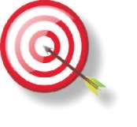
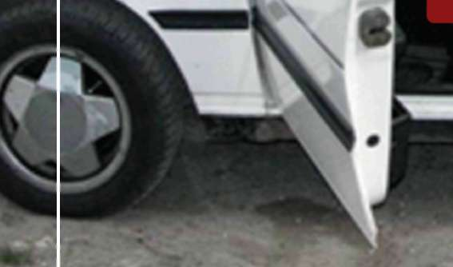
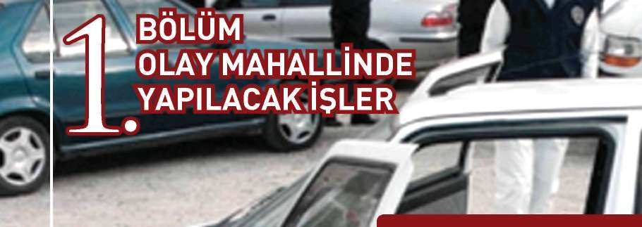
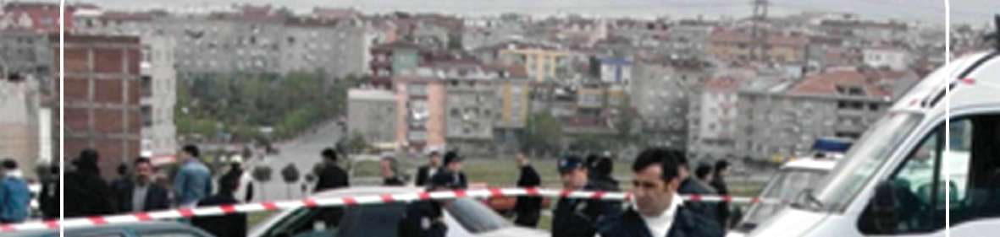
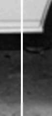
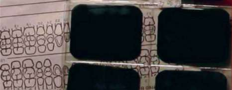
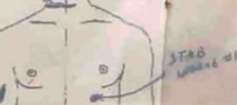
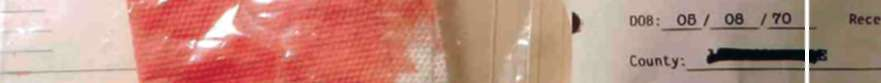
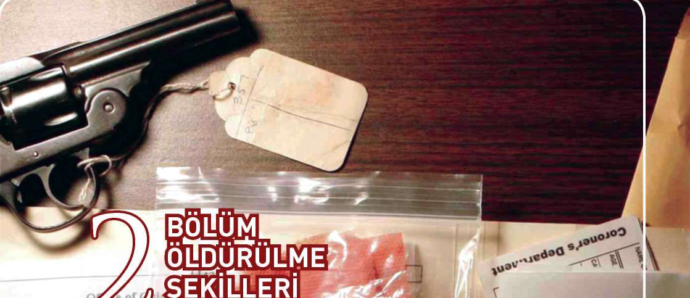
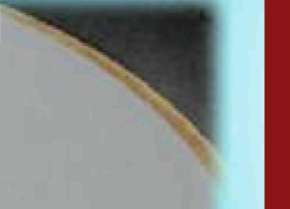

Proje Danışmanı : Prof. Dr. Semiha AYDIN
Proje Koordinatörü : Ali SEVİNÇ
Hazırlayanlar : Ünal KARAKUŞ
Ertuğrul GÜLER
Tansel ORAKOĞLU
M. Fahrettin GÖNBE
Şeyhmus AKDEMİR
Numan AKYAY
Yusuf YANARDAĞ
Yüksel ÇELİK
Turan KÖSE
Emeği Geçenler : Yakup AKTAŞ
Erdal VURAL
Grafik Tasarım : TN İLETİŞİM
Baskı : 1. Baskı, 2011
EMNİYET GENEL MÜDÜRLÜĞÜ
Dikmen Cd. No: 89
Dikmen / ANKARA
Tel.: 0312. 412 28 35
^
CİNAYET SUÇU
SORUŞTURMA
TEKNİKLERİ
HEDEF ve DAVRANIŞLAR 11
ÖĞRENME - ÖĞRETME STRATEJİLERİ 11
DEĞERLENDİRME STRATEJİLERİ 12
BAŞVURU KAYNAKLARI 12
BELİRTKE TABLOSU 14
KURS PROGRAMI 15
GİRİŞ 17
1. BÖLÜM
OLAY MAHALLİNDE YAPILACAK İŞLER 1
1.1. İlk Ekibin Görevleri 19
1.2. Cinayet Büro Amirliği Personelince Olay Yerinde Yapılacaklar . 20
1.3. Kimliği Belirsiz Cesedin Kimlik Tespiti 21
1.4. Olay Yerinin Tespiti 21
1.5. Suç Sebebinin Tespiti 22
1.6. Planlı Cinayetin Tespiti 22
1.7. Senaryo Üretimi 22
1.8. Şüphelinin Tespiti 23
1.9. Şüphelinin Kaçış Yolunun Tespiti 24
1.10. Yakalama 24
2. BÖLÜM
ÖLDÜRÜLME ŞEKİLLERİ
2.1. Ateşli Silahla Vurularak Öldürülme Hali 27
2.2. Delici Aletlerle Açılan Yaralardan Ölüm Hali 27
2.3. Kesici Aletlerle Açılan Yaralardan Ölüm Hali 28
2.4. Kesici ve Yırtıcı Aletlerle Açılan Yaralardan Ölüm Hali 28
2.5. Boğarak Öldürme Hali 28
2.6. Asılma Olayları İle Ölüm Hali 28
2.7. Zehirlenmeler 29
2.8. Düşmeler 30
2.9. Yanıklar 30
2.10. Boğulmalar 31
2.11. Darp Sonucu Ölüm Hali 31
2.12. Cinsel Cinayetler 32
2.13. İntiharlar 32
2.14. Öldürülme Şekillerinde Dikkat Edilmesi Gerekenler 33
2.15. Olayı Çözmede Karşılaşılan Problem 38
2.16. Olay Çözüldü Mü ( Cinayet Mi, İntihar Mı )? 38
2.17. Soruşturmacı/Uzman Hekim/Adli Tıp Uzmanı İşbirliği 39
3. BÖLÜM
ÖLÜM ZAMANININ TESPİT EDİLMESİ
3.1. Vücut Isısı 41
3.2. Ölüm Sonrası Lekeleri 41
3.3. Ölü Katılığı 41
3.4. Çürüme 41
3.5. Hematomik lekeler 42
3.6. Kanamalar 42
3.7. Kadaverik spazm 42
4. BÖLÜM
SORUŞTURMADA DİKKAT EDİLMESİ GEREKENLER
4.1. Soruşturmada Dikkat Edilmesi Gereken Kurallar 45
4.2. Soruşturmada Dikkat Edilmesi Gereken Hususlar 46
4.3. Soruşturmacının Özellikleri ve Yapması Gerekenler 46
4.4. Soruşturma Dosyalarının Düzenlenmesi 47
5. BÖLÜM
HTS İNCELEMELERİ “HİSTORİCAL TRAFFİCİNG SEARCH”
5.1 Maktulün HTS’nin İncelenmesinde
Dikkat Edilmesi Gereken Hususlar 49
5.2 Maktul Yakınlarının HTS’lerinin İncelenmesinde Dikkat Edilmesi Gereken Hususlar 50
5.3 Şüphelilerin HTS’lerinin İncelenmesinde 50
5.4 Olayla İlgisi Olabilecek Kişilerin HTS’lerinin 51
5.5 HTS’lerin İncelenmesindeki Genel Bilgiler 51
6. BÖLÜM
İFADE ALMANIN ÖNEMİ
6.1 Polisin Yürüttüğü İşlemlerde İfade Almanın Önemi 53
6.2 İfade Almada Algılamanın Önemi 54
6.3 Çağdaş İfade Alma Yönteminde İletişim 55
6.4 İfade Alan Memurdan Talepler 55
7. BÖLÜM
İFADE ALMA SAFHALARI
7.2 Uygulama Safhası 60
7.3 Derleme Aşaması 77
BÖLÜM
Lİ TAHKİKAT SÜRECİ 81
8.1 Adli Tahkikat Süreci 81
KAYNAKÇA
EKLER
EK - 1: Kurs Sonu Sınav Soruları 83
EK - 2: İfade Almada Performans Kriterleri Ve Gözlemleme 88
EK - 3: Örnek Olaylar Ve Grup Çalışmaları 91
EK - 4: Örnek Olaylar Ve Senaryolar 92
EK - 5: Kurs Programı Değerlendirme Ölçeği 96
EK - 6: Programın Hazırlannasına ve Uygulanmasına İlişkin Görüşler 97
EK - 7: Yasal Düzenlemeler 98
EK - 8: Eğitici Personelin Değerlendirilmesi 112
UNUŞ
Günümüz medeniyet anlayışı, bireysel hak ve özgürlüklerin güvence altına alınarak demokrasinin tüm unsurlarıyla geliştirilmesini, küresel düzeyde toplumların barış içerisinde yaşamasını ve genel olarak adaletli bir sistemin işletil-mesini hedeflemektedir. Böyle bir medeniyet, tüm toplumların katkısı ve kendilerinden bir şeyler bulması ile gelişebilecektir.
Türkiye, coğrafi olarak üç kıtanın buluşma noktasında, tarihî ve kültürel zenginlikleri ile toplumlar arasında bir köprü görevi görmektedir. Yüzyıllardır farklı din ve kültürler Anadolu coğrafyasında barış ve hoşgörü içerisinde ya
şamaktadır. Türkiye, sahip olduğu bu potansiyeli ile dünya medeniyetinin geli
şimine katkı sağlamak, barış ve istikrarın küresel düzeyde kalıcı hale gelmesi için çaba harcamaktadır. Bu amaç çerçevesinde, üyesi olduğu BM, NATO, AGİT
ve İslam Konferansı ile üyelik sürecinde olduğu AB gibi Uluslararası Örgütler bünyesinde aktif sorumluluk üstlenmektedir. Birleşmiş Milletler barışı koruma misyonlarında, Balkanlardan Afrika’ya, Amerika’dan Uzak Doğu’ya pek çok ülkede dünya barışı için görev almaktadır.
Türkiye Cumhuriyeti’nin önemli kurumlarından birisi olan Türk Polis Teşkilatı, ülkenin genel politika ve hedeflerine uygun olarak dünyada güvenlik alanında yaşanan her türlü gelişmenin takipçisidir. Türk Polis Teşkilatı, güvenlik bilimi ve teknolojilerinde yaşanan gelişmeleri büyük bir dikkat ve titizlikle takip ederken, 2000’li yıllarla birlikte üretmeye ve deneyimlerini geleceğe yön verecek birikimlere dönüştürmeye başlamıştır.
Türk Polisi, 70 milyonu aşan nüfusa sahip bir ülkenin 250 bin çalışanı ile ulusal bir polis teşkilatıdır. C o ğrafi olarak geçiş bölgesi olması dolayısıyla uyuş-turucu başta olmak üzere her türlü kaçakçılıkla mücadele deneyimi vardır . İnsan ticareti ve kaçakçılığını önlemedeki başarısı özellikle uluslararası güvenlik kuruluşları tarafından takdir edilmektedir. Türk polisinin son yıllarda önemli gelişme gösterdiği Terörizmle mücadele alanındaki uygulamaları örnek alınmaktadır. Polis havacılığı, kriminal incelemeler, bilgi işlem ve bilişim teknolojileri, haberleşme sistemleri, istihbarat ve suç analiz programları, toplumsal olaylara müdahale ile sosyal kaynaşma ve suç önleme odaklı toplum destekli polislik anlayışı örnek alınabilecek belli başlı alanlardır.
Türk polisi, son yıllarda Avrupa, Balkanlar, Orta Asya, Ortadoğu ve Afrika’daki birçok ülke polisi ile eğitim işbirlikleri gerçekleştirmiş, son iki yılda 35 farklı ülke polisinden yaklaşık 4000 polis, Türk polisi tarafından organize edilen hizmet içi eğitim programlarına katılmıştır. Bu eğitimler, bilgi ve deneyim paylaşımlarının yapıldığı, güvenlik sorunlarına demokratik polislik anlayışı çerçevesinde çözümlerin tartışıldığı, mesleki dostlukların kurulduğu ortamlar oluşturmuştur. Türk polisi, bilginin saklanarak değil paylaşılarak değer kazanacağı düşüncesinden hareketle birikimlerini dünya polisine açma noktasında son derece açık ve paylaşımcı olurken diğer ülke polislerinden öğrenebileceklerinin de farkındadır.
Ülkeler arasında yapılan eğitim işbirliklerinin ve planlanan hizmet içi eğitim aktivitelerinin beklenen sonuçları vermesi için eğitim biliminin temel ilke ve prensipleri doğrultusunda hareket edilmesi gerekmektedir. Eğitimden en üst düzeyde verimin elde edilebilmesi için temel gereklerden biri de eğitim materyallerinin hazırlanmasıdır. Türk polisi, yaklaşık iki yıl önce başlattığı proje çerçevesinde uluslararası eğitimlerde kullanılacak eğitim kitaplarının modern öğretim yöntem ve tekniklerine uygun olarak yeniden hazırlanması amacıyla bir çalışma başlatmıştır. E ğitim bilimleri alanında uzman öğretim üyeleri ve tasarımcıların desteğinde, alanında uzman polisin katılımıyla eğitici ve kursiyer kitapları ayrı olmak üzere toplam elli dört konu başlığında kitap yazım ve tasarım çalışması yapılmıştır. Katılımcı merkezli, örnek olay çözümlemeli ve uygulama ağırlıklı oluşturulan bu kitapların eğitimde verimi artırması hedeflenmektedir.
Yoğun emek sarf eden meslektaşlarımızı çalışmalarından dolayı tebrik ederiz.
Bu eğitim kitaplarının dünya polisinin paylaşımlarını en üst düzeye taşıması, dünya barışına ve daha güvenli bir geleceğe hizmet etmesi dileğiyle…

|îiai]aaHîHLEiai]^^^^QnîMg||s|^^H
ÖĞRENME - ÖĞRETME STRATEJİLERİ, DEĞERLENDİRME STRATEJİLERİ
1. Cinayet suçu soruşturmaları ile ilgili mevzuat bilgisi 2. Cinayet suçu soruşturma yöntemlerini kavrama gücü 3. Suç soruşturmasında etkili ifade alma
4. Suç soruşturmasında kullanılan analiz yöntemlerini kavrama gücü HEDEF ve DAVRANIŞLAR
1. Cinayet suçu soruşturmaları ile ilgili mevzuat bilgisi 1.1. Cinayet suçu mevzuat bilgisine sahip olma 1.2. Hukuki mevzuata göre hareket etme
2. Cinayet suçu soruşturma yöntemlerini kavrama gücü 2.1. Cinayet suçu soruşturmasında etkili yöntemler uygulama 2.2. Ölüm şekillerine göre cinayeti çözme yöntemleri uygulama 2.3. Cinayet suçu sebeplerini tahmin etme
2.4. Olay mahallinde olay analizi yapma
3. Suç soruşturmasında etkili ifade alma 3.1. İfade almada farklı taktikler uygulama 3.2. İfade almada hukuki mevzuata göre hareket etme 3.3. İfade alma sırasında güvenli ortam oluşturma 3.4. İfade alma sırasında uygun fiziki şartları hazırlama 4. Suç soruşturmasında kullanılan analiz yöntemlerini kavrama gücü 4.1. Telefon analiz yöntemleri ile olay çözme 4.2. Olay analizi yapma
4.3. Operasyon analizi yapma
BAŞVURU KAYNAKLARI
^ EGM Asayiş Dairesi Başkanlığı Kuruluş, Görev ve Çalışma Yönetmeliği
^ EGM İl/İlçe Emniyet Müdürlükleri/Amirlikleri Asayiş Şube Müdürlüğü/
Büro Amirliği Kuruluş, Görev ve Çalışma Yönetmeliği
^ Modern Soruşturma Teknikleri (A.Turhan ŞENEL) 11
HEDEFLER, HEDEF ve DAVRANIŞLAR, ÖĞRENME - ÖĞRETME STRATEJİLERİ, DEĞERLENDİRME STRATEJİLERİ
^ Asayiş Dairesi Başkanlığınca 2001-2005 yılları arasında yapılan çalışmalar.
^ Cinayet Olayları Soruşturma Teknikleri 2006 (EGM Yayın No:411)
^ 5237 Sayılı Türk Ceza Kanunu
^ 5271 Sayılı Ceza Muhakemesi Kanunu
^ İfade Almada Standartların Belirlenmesi için Görüş ve Tavsiyeler Kılavuzu. “AB Eşleştirme Projesi TR02-JH-01 ”
^ Cinayetin Şifreleri (Mustafa KAYGISIZ ve Hanefi SEVER) 12

SÜRE
25 Ders saati
Sunuş, buluş ve uygulama yoluyla öğretme
ÖĞRETİM TEKNİKLERİ
Anlatma, tartışma, soru-cevap ve örnek olay
Tepegöz-yansı, video cd-kaset
ETKİNLİKLER
Tiyatral oyunlar
HEDEFLER, HEDEF ve DAVRANIŞLAR, ÖĞRENME - ÖĞRETME STRATEJİLERİ, DEĞERLENDİRME STRATEJİLERİ
o BELİRTKE TABLOSU
HEDEFLER
^
1. BÖLÜM:
OLAY MAHALLİNDE YAPILACAK
X
İŞLER
2. BÖLÜM:
ÖLDÜRÜLME ŞEKİLLERİ
X
•
ÖLÜM ZAMANININ TESPİT
X
EDİLMESİ
•
3. BÖLÜM:
SORUŞTURMADA DİKKAT
X
X
X
EDİLMESİ GEREKENLER
4. BÖLÜM:
X X
HTS İNCELEMELERİ
5. BÖLÜM:
X
X
X
İFADE ALMANIN ÖNEMİ
6. BÖLÜM:
X
X
İFADE ALMA SAFHALARI
7. BÖLÜM:
X
X
X
ADLİ TAHKİKAT SÜRECİ

KURS PROGRAMI
SAATLER
PAZARTESİ
SALI
ÇARŞAMBA
PERŞEMBE
Ölüm /
Açılış
Öldürülme
İfade Alma
09.30
Konuşması
Şekilleri ve
Mevzuat
HTS Analizi
Teknik ve
10.15
ve Kurs
Ölüm Zamanının
Yöntemleri
Bilgilendirmesi
Tespiti
Ölüm /
Cinayet
Öldürülme
HTS Analizi
İfade Alma
10.30
Mahallinde
Şekilleri ve
(Örnek
Teknik ve
Mevzuat
11.15
Yapılacak İşler
Ölüm Zamanının
Olaylar)
Yöntemleri
Tespiti
Ölüm /
Cinayet
Öldürülme
HTS Analizi
İfade Alma
11.30
Adli
Mahallinde
Şekilleri ve
(Örnek
Teknik ve
12.15
Tahkikat
Yapılacak İşler
Ölüm Zamanının
Olaylar)
Yöntemleri
Tespiti
ÖĞLE ARASI
Ölüm /
Olayın
Öldürülme
İfade Alma
13.30
Aydınlatılmasına
Şekilleri ve
Teknik ve
Sınav
14.15
Yönelik
Ölüm Zamanının ……………….
Yöntemleri
Yapılacak
Tespiti
Çalışmalar
Olayın
İfade Alma
Kurs
Aydınlatılmasına
Teknik ve
Değerlen14.30
HTS Analizi
Yönelik
Yöntemleri
dirmesi
15.15
……………….
Yapılacak
(Örnek
Kapanış
Çalışmalar
Olaylar)
Olayın
İfade Alma
Aydınlatılmasına
Teknik ve
15.30
Yönelik
HTS Analizi
Yöntemleri
16.15
Yapılacak
…………….
……………
(Örnek
Çalışmalar
Olaylar)
Ölüm, gizeminden dolayı genellikle insanların dikkatini çeken bir olaydır.
İnsanlar çevresinde ölüm olayı gerçekleştiğinde algılarını bu yöne çevirir ve olayın neden-sonuç ilişkisini öğrenmeye çalışır. Cinayet olayları ise daha dikkat çekici ve uyarıcıdır. Ortada ölen ve öldüren vardır. İnsanlar alıcılarını bu yöne doğru çevirir. Cinayet olayları meydana geldiği bölgede korku ve panik yaratabilir. Toplum bu olaydan etkilenir. Kolluk güçlerinin toplumun rahat ve huzurlu yaşabilmesi için bu olayı aydınlatma ve kamu vicdanını rahatlatma görevi vardır. Bu nedenle cinayet olayları kolluk için önemli bir konudur. Ülkemizde son dönemlerde meydana gelen cinayet olaylarına bakacak olursak son on yılda değişik çapta olaylarla karşılaştık. Seri cinayetler, organize suçlara bağlı yaşanan infazlar, terör olayları ve satanist cinayetleri gibi. Özellikle son birkaç yılda okullarda ve aile içindeki cinayetler daha çok dikkat çekmektedir.
Suçu aydınlatmada, cinayeti çözmede çok alternatifli düşünmek, senaryolar yazmak ve yorumlamak gerekir. Olayın başında bin tane ihtimal vardır fakat bu ihtimallerden sadece biri olmuştur. Çoğu zaman insanlar olaylara göründüğü gibi bakarlar. Suçtan sonra mağdur veya fail hakkında fikirler beyan ederler. İnsanların gösterilen iyi yönleri bilinir ve söylenir. Her insanın göstermediği kötü yönleri vardır. Bunlar detaylı araştırma ile ortaya çıkar. Bu araştırmalarda bilimin ve teknolojinin her türlü imkânı kullanılarak ortaya bir sonuç, bir olgu, bir eser çıkartılır.
Sabırlı olmak, inanmak, güven verici olmak, iş bitirici olmak, ekip ruhunu yakalayabilmek, ideal soruşturma yapmak, kritik delillendirme ve en önemlisi halkın desteği, cinayetlerin aydınlatılmasında en önemli etkenlerdir.
Belirgin her olayın bir çözümü vardır. Cinayetler adli, belirgin bir olaydır.
Olayı çözememek cinayetin kusursuz olduğundan değil, bizim eksikliğimiz-dendir. Bu çözümlemelerde belirli teknikleri vermek konuyu sınırlandırır. Bize göre her şey delildir. Genel polisiye kaidelerin yanında her olayın kendine özgü verileri vardır. Bunların iyi değerlendirilmesi gerekir. Kalıplaşmış bilgiler olayı karartır. Cinayet olaylarında akla hayale gelmeyecek amaçlar, yöntemler, sonuçlar olabilmektedir.
Ölüm olayları tek taraflı düşünülmemelidir. Bir ası olayında “tamam bu intihardır, zaten tanıklar da intihar edenin depresyonda olduğunu söylüyor”
şeklindeki bir yaklaşım yanlış bir yaklaşımdır. Ölüm olayları etraflıca düşünül-melidir. Kaza, intihar ya da cinayet olasılıkları her zaman aynı paralelde araştırılmalıdır. Hiçbir olaya ön yargı ile yaklaşılmamalı, her ölüm olayı aksi ispat edilinceye kadar bir cinayet olayı gibi soruşturulmalıdır.
Bu nedenlerle bu eğitim kitapçığı; gerek meslek içi, gerek meslek öncesi eğitimlerde gerekse de meslek harici kitlelere ulaşabilmek, cinayet olaylarının ne kadar önemli ve karmaşık olduğunu vurgulamak ve karmaşık cinayetlerin çözümüne yardımcı olmak için hazırlanmıştır.






MAHALL İ NDE YAPILACAK İŞ LER
POLİt
1.2 Cinayet Büro Amirliği Personelince Olay Yerinde Yapılacaklar
1.3 Kimliği Belirsiz Cesedin Kimlik Tespiti 1.4 Olay Yerinin Tespiti
Suç Sebebinin Tespiti
Planlı Cinayetin Tespiti
1.7 Senaryo Üretimi
1.8 Şüphelinin Tespiti
Şüphelinin Kaçış Yolunun Tespiti
* -<«
^ ^


BÖLÜM
OLAY MAHALLİNDE YAPILACAK İŞLER
1. BÖLÜM: OLAY MAHALLİNDE YAPILACAK İŞLER
Cinayet olayları soruşturmacı birimlerin karşılaşabileceği en önemli olaylardır. Bu yüzden bir cinayet olayı meydana geldikten sonra yapılması gerekenlerin sistematik bir şekilde planlanması ve soruşturmacıların olaylar üzerinde dikkatli ve titiz çalışmaları gerekmektedir. Meydana gelen olayların işleniş tarzı, kullanılan suç aleti ve sebepleri çerçevesinde soruşturma yöntemi tayin edilmelidir.
Her suçta suç yerine ilk giden ekip görevlisinin çok büyük sorumlulukları vardır. İlk ekibin akıllı ve titiz tutumu soruşturmanın sonucunu tayin edebilecek en önemli faktörlerden biridir. Suç yerine ilk giden görevlinin davranışları, soruşturmanın sonucunu tayin edecek kadar önemlidir. Bu nedenle ilk ekibin yapması gereken hususların neler olduğunu öncelikle belirtmek gerekir.
1.1. İlk Ekibin Görevleri
^ Mağdurun yaşayıp yaşamadığına bakınız.
^ Mağdur yaşıyorsa hemen en yakın sağlık kuruluşuna sevkini sağlayınız.
^ Suç mahallini, delilleri korumak için hemen muhafaza altına alınız, hiçbir kimseye el sürdürmeyiniz.
^ Suç yerini muhafaza altına alır almaz amirlerinize haber veriniz.
' “Olay Yeri İnceleme” görevlileri gelene kadar hiçbir kimsenin olay yerine girmesine izin vermeyiniz.
^ Görgü tanıklarının kimler olduğunu tespit ediniz ve tanıkları hemen birbirinden ayırıp konuşmalarını engelle yiniz.
^ Suçun ilk öğrenildiği saat, ilk memurun olay mahalline gelişi, hava durumu ve şartları tespit ediniz.
^ Şüpheli veya şüpheliler hakkında bilgi veya eşkâl tespiti yapınız.
^ Şüpheli olay yerinde ise hemen yakalayınız, değil ise elde edilen bilgiler doğrultusunda yakalanmasını sağlayınız.
^ Çevredeki insanların suça ilişkin sohbet veya tartışmalarını dinleyiniz, önemli noktaları not ediniz ve konuşanların kimliklerini tespit ediniz.
Olay yeri inceleme görevlileri, olay yerinde incelemelerini bitirdikten sonra cinayet büro personeli ile birlikte yeniden olay yerini gözden geçirmeli ve birlikte değerlendirme yapmalıdırlar.
Olay Yerine girenler;
1. Dikkatli bir şekilde davranmalı, en ufak teferruatı dahi gözden kaçırmamalıdır, 2. Olay yerinin şüpheli yada maktul açısından önemi araştırılmalıdır, 3. Şüphelinin geliş ve gidiş yolunu tespit edilmesi, olay yerinde na sıl davranmış olduğunu kestirmeye çalışmalıdır, 19
OLAY MAHALLİNDE YAPILACAK İŞLER
.
4. Şüphelinin hedef veya gayesi dikkatli şekilde incele nmeli ve bulgular not edilmelidir,
5. Dış çevre tetkik edilmelidir,
6. Yalnız normal görüntülere değil, suçla ilgisi yokmuş gibi görülen teferru-ata da önem verilmelidir.
Olay Yerinde Ölümü Tespit Edebilmenin Basit ve Pratik Yolları Nelerdir?
^ Teneffüs olmayışı, (Dudaklarına ayna yaklaştır, ay nada ölüm halinde buğulanma olmaz),
^ Kalp atışının durması,
^ Tırnak rengi (kızarıklığının olmayışı),
^ Göz bebeklerinin ışığa karşı reaksiyonunun olmayışı,
^ Göz bebeklerinde sabit, donuk bakış,
^ Göz bebeklerinde refleks yokluğu,
^ Aşikâr görünüş (Kokuşma, ezilme, başın kesik olması vs.), Herkes tarafından ölümün kolay tespit edilemeyeceği durumlar vardır.
Örneğin;
^ Elektrik şokları,
^ İlaç zehirlenmeleri,
^ Barbitürat zehirlenmesi (Yatıştırıcı, müsekkin, uyku ilacı; vb. adlarla anılan ilaç ya da maddelerin ortak adı. )
^ Derin hipnozlardır.
1.2. Cinayet Büro Amirliği Personelince Olay Yerinde Yapılacaklar
^ Cesedin yerini, durumunu, pozisyonunu inceleyiniz.
^ Maktulün kimliğini tespit ediniz.
^ Eşyaların bulunduğu yerleri not ediniz.
^ Olay yeri inceleme uzmanlarınca, eşyalar üzerindeki izlerin tespiti, fotoğraf çekilmesi ve olay yeri krokisine işlenmesi hususlarını sağlayınız.
^ Cesedin pozisyonunu, sabit eşyalarla orantılı ola cak şekilde fotoğrafla-rını çektirip olay yeri krokisine işaret ettiriniz.
^ Ceset, uzman hekim tarafından muayene edilirken yanında bulununuz.
^ Ceset üzerindeki yaraların durumunu ve yerlerini fotoğraflarla tespit ettiriniz.
^ Suçun meydana geldiği andaki hava durumunu tespit etmeye çalışınız.
^ Olay kapalı alanda olmuş ise kapıları, pencereleri, mefruşatı inceleyiniz.


BÖLÜM
OLAY MAHALLİNDE YAPILACAK İŞLER
Açık-kapalı kapıların pozisyonla rını işaretleyiniz. Olay yerine giriş-çıkış
noktalarını inceleyeniz.(Kırık kapı, açık pencere, balkon v.s.)
^ Var ise mermi izleri, kovan, kan lekeleri, parmak izi, alet izi, kablo kesikleri, kumaş parçaları, sigara izmaritleri, cam kırıkları kıl ve vücut akıntıları olup olma dığına bakınız, fotoğraflandırılarak olay yeri krokisine işaretletiniz.
^ Bir damla kanın dahi şüpheliye ait olma ihtimalini göz önünde bulundurarak farklı noktalardan kan numunesi aldırınız.
^ Maktulün parmak izi, avuç izi ve swap örneğini aldırınız.
^ Maktulün olay anında üzerinde olan eşyalarının tümünü aldırınız,
^ Adli Tıp’dan kan ve tırnaklarının incelenmesini sağlayınız.
^ Maktulün üzerinden çıkan eşyaların değerlendirmesini yapınız.
^ Olay yerindeki iz ve delillerin şüpheliye mi, maktule mi yoksa üçüncü şahıslara mı ait olduğunu araştırınız.
^ Olayın tasvirini not ediniz.
1.3. Kimliği Belirsiz Cesedin Kimlik Tespiti
^ Çevreki kişiler (Muhtarlar, çevre eşrafını tanıyan bilen kişiler, tanıklar),
^ Polis kriminal sistemleri, (Parmak izi - DNA v.s.),
^ Vücut üzerindeki izler (dövme, ameliyat v.s.),
^ Maktulun dişleri (altın, kaplama, takma, eksiklik v.s.),
^ Üzerinden çıkan eşyalar,
^ Kayıp ilanları ve Emniyet Bilgi Sistemindeki (EBS) Kayıp Şahıs projesi,
^ Kayıp dernekleri,
^ Genel ve yerel basın,
1.4. Olay Yerinin Tespiti
Suçun mutlaka cesedin bulunduğu yerde işlenmesi gerekmez. Suç başka yerde işlenebilir ve ceset bulunduğu yere farklı şekillerde geti rilebilir. Bu bakımdan;
^ Sürünme izleri, ayak izleri, kovan ve kan lekelerinin durumlarına,
^ Cesedin ambalaj lanmış olduğu malzemelere,
^ Gazete kâğıtları kullanılmış ise özelliklerine, (isim, tarih)
^ Cesede batmış bulunan şey ler olup olmadığına,
^ Eşyaların markalarına,
^ Dişlerin durumuna veya hastalık belirtilerine,
^ Elbiselerdeki yırtık ve tamir izlerine,
^ Cesedin bir arabadan atılmış olması ihtimaline karşı; lastik izleri olup olmadığına bakınız.
MAHALLİNDE YAPILACAK İŞLER
Ölümü meydana getirecek ciddi yaralar açıldıktan sonra
bile maktulün bazı ha reketler yaptığını ve uzun bir mesafe
1.5. Suç Sebebinin Tespiti
Öldürme olaylarında suçun gerçek sebebini belirlemek önemli ve zor bir iştir. Sebebin doğru olarak tayin edilebilmesi şüpheli hakkında önemli ipuçları verir. Kişiyi suça itebilecek sebeplerden belli başlı olanları şunlardır:
^ İntikam almak,
^ Namus ve kıskançlık,
^ Rekabet,
^ Menfaat sağlamak (Hırsızlık, miras, vs.),
^ Alacak-verecek,
^ Düşmanlık - kan gütme,
^ Cinsel motifler,
^ Meşru müdafaa,
^ Akıl hastalığı,
^ İdeolojik motifler,
^ Anlık cinayetler (kavga vs.)
^ Gasp cinayetleri,
^ Cinnet,
^ Aile içi uyuşmazlık,
^ Mafya,
^ Suikastlar,
^ Başka bir suçu gizlemek,
^ Diğerleri.
1.6. Planlı Cinayetin Tespiti
Suçlunun, suçu işlemeden önce bazı hazırlıklar yapıp yapmadığını araştır-mak ve tespit etmek de önemli ipuçları verecektir. Örneğin, suçun işlenmesinden önce çevrede şüpheli bazı olaylar cereyan etmiş midir? Bazı şüpheli şahıs ve yabancı kişilerin çevrede dolaştıkları görülmüş müdür? Buna benzer değişik olaylar olmuş mudur? Araştırınız.
1.7. Senaryo Üretimi
Uzmanların, suç mahallinde incelemesi bittikten sonra, olay yeri tekrar cinayet büro personeli tarafından incelenir.


BÖLÜM
OLAY MAHALLİNDE YAPILACAK İŞLER
Elde edilen bilgi ve bulgular doğrultusunda olabilirlik derecesine göre çeşitli senaryolar üretilir ve üretilen senaryolar önem sırasına göre değerlendirilir.
1.8. Şüphelinin Tespiti
^ Tanıkların beyanları,
^ Şüpheli veya şüphelilerin sayısı,
^ Suç aletleri,
^ Şüphelinin izlemiş olduğu güzergâhtaki izler,
^ Şüpheli yaralı mı değil mi?
^ Maktulün elbiseleri, iç çamaşırları, tırnak ve vücudundaki izler,
^ Olay yerindeki karakteristik tozlar ve top rak kalıntıları,
^ Olay yerindeki kan izleri, parmak izleri ve diğer izler,
^ Olay yerindeki kıl, tükürük vs. DNA çözümüne yarayacak diğer izler,
^ Not defteri, adres ve telefon numaraları,
^ Maktulün arkadaşları, sevgilisi ve düşmanları,
^ Maktulün işi,
^ Maktulün sık sık uğradığı yerler,
^ Maktulün barındığı yerler,
^ Alışkanlıkları,
^ Her nevi giyim eşyası, kuru temizleme yerlerinin işaretleri, yapımcı firma işaretleri ve terzi etiketleri,
^ Varsa olayda kullanılan motorlu aracın, renk, model, tip ve plaka numarası, vs.
^ Çalınmış eşyalar,
^ Olay yerine yakın kamera görüntüleri,
^ Olay yerinde bulunan seyircilerin kamera ile tespiti, (Cenaze töreninin izlenmesi)
^ Zehirler,
^ Tanık veya meraklıların konuşmalarının tespiti,
^ Maktulün telefon analizleri,
^ Maktulün kullanmış olduğu bilgisayar ile e-posta adresinin kontrol edilmesi,
^ Banka hesap detayları,
^ Koli - posta gönderileri,
^ Polnet proje sorguları, (KIHBI, Tahdit Yolcu Kayıtları, Kimlik Paylaşım Sistemi, Araç Tescil, Sürücü, Geçici İkamet Yerleri Konaklama, Pasaport, Silah Ruhsat, Yeşil Kart v.s.)
^ Hastane ve eczane kayıtları (Sosyal Güvenlik Kurumu), 23
OLAY MAHALLİNDE YAPILACAK İŞLER
.
^ Suç Analiz Merkezi sorguları,
^ Maktulun suç kaydı, tespiti halinde suç arkadaşları,
^ UYAP sorgusu,
^ İnternet üzerinden sorgu yapılması,
^ Telekom, Tedaş, Sular İdaresi ve şirketlerin veri tabanındaki kişisel bilgilerin araştırılması,
^ Ankesörlü telefon kartları, toplu taşıma abonelik bilgileri,
^ Mahalli araştırmalar,
^ Akaryakıt İstasyonları kayıtları,
^ Terminal kayıtları, (Tren, Otobüs, Uçak)
^ Deniz taşımacılığı kayıtları,
^ Oto Kiralama ve Ticari Taksi kayıtları,
^ Karayolları kayıtları,
^ Olay yerinde mümkünse “Cell” çalışması,
^ Maktulle en son kimler irtibata geçmiş, maktulü en son kim görmüş,
^ Eğitim öğretim akademik durumu,
^ Üye olduğu dernek, kuruluş, tarikat v.s.,
^ Konu ile ilgili olarak gelen ihbarların değerlendirilmesi.
^ Olay yerindeki bütün deliler üzerinde araştırma yapınız ve şüphelinin kim olduğunu bulmaya çalışınız.
1.9. Şüphelinin Kaçış Yolunun Tespiti
^ Şüphelinin olay mahallini terk ediş yolunu tespit etmeye çalışınız ve bu-ralarda izler arayınız.
^ Gidebileceği yerleri düşününüz. Şehir çıkışlarını kontrol altına alınız ya da aldırınız.
^ Tespit edilebilen yerler varsa o yerin güvenlik güçlerine (Jandarma vb.) derhal bilgi veriniz.
1.10. Yakalama
Şüphelinin;
^ Yeri biliniyorsa derhal ekip sevk edilmeli,
^ Suç yerinden uzaklaşma ihtimaline karşı, adı, adresi, eşkal tarifi, özellikleri, varsa fotoğrafı, ziyaret ettiği veya edebileceği yerler ile bulunabi-leceği yerler süratle bütün görevlilere bildirilmeli,
^ Suçu işlemeden önceki alışkanlıkları ve davranış tarzları tespit edilmeli,
^ Ev ve işyeri gözetlenmeli,
^ Bütün haberleşme kanalları kontrol altına alınmalı, 24

BÖLÜM
OLAY MAHALLİNDE YAPILACAK İŞLER
^ Telefon dökümleri (HTS) alınmalı ve analiz edilmeli,
^ Dost, arkadaş, sevgili, nişanlı, aile fertleri vs. ta kibe alınmalıdır.
BÖLÜM SONU DEĞERLENDİRME SORULARI
1- Aşağıdakilelerden hangisi olay yerinde yapılacak ilk işlerden değildir?
%
a) Mağdurun yaşayıp yaşamadığına bakılır
b) Suçu ihbar eden kişinin kimliğini tespit edilir c) Suç yerini muhafaza altına alınır ve derhal amirlere haber verilir d) Olay yerine Cumhuriyet savcısı gelene kadar beklenir 2- Aşağıdakilelerden hangisi olay yerinde yapılacak işlerdendir ?
a) Suçun ilk öğrenildiği saat tespit edilir b) İlk olay yerine gelen ekibin olay mahalline geliş saati tespit edilir c) Olay tanıkları tespit edilir
d) Hepsi
3- Aşağıdakilelerden hangisi olay yerinde yapılması gereken işlerden değildir?
a) İçeriye girenler gayet dikkatli ve itinalı hareketle en ufak teferruatı dahi gözden kaçırmamalıdır
b) Şüphelinin giriş ve çıkış yolunu tespit etmeli, içeride na sıl davranmış olduğunu kestirmeye çalışmalıdır
c) Cumhuriyet savcısı gelmeden olayı hemen çözmek için olay yeri incelenmeye başlanır.
d) Dış çevre tetkik edilmelidir








Ş EK İ LLER İ
İY ADOLT DIACRAM (FH * » « W
ftge »t tine of offensı : 80
ruıı
a.,4'Vt<."< I
Iteight: Igg tJBB t j e s : _ a
-1 S ^B'J.
IUt)VP Courıt>; ^ i B i ^ ^ p i
,. aiNOTROCT
1 ,f» ».»^
2.1 Ateşli Silahla Vurularak Öldürülme Hali lard:
lYBAia / CX»t
i l i ' t
2.2 Delici Aletlerle Açılan Yaralardan Ölüm Hali 2.3 Kesici Aletlerle Açılan Yaralardan Ölüm Hali
2.4 Kesici ve Yırtıcı Aletlerle Açılan Yaralarda Ölüm Hali _i
'-^^ Boğarak Öldürme Hali
" I
. Asılma Olayları İle Ölüm Hali
2.7 Zehirlenmeler I
2.8 Düşmeler
2.9 Yanıklar
1 I
Boğulmalar
.11 Darp Sonucu Ölüm Hali
2.12 Cinsel cinayetler
2.14 Öldürülme Şekillerinde Dikkat Etmesi Gerekenler
2.16 Olay Çözüldü Mü ( Cinayet mi, intihar mı )?
#Blt-7T69 BI
2.17 Soruşturmacı Uzman Hekim/Adli Tıp
QOD:IT AFPOI
mncM Sıgnılura:
iiT K4C? öl fttl
=Hf.»
. , V - ^ *-^W*_ I
J = _ ^ ^ ^ ,
~-!p-;rı«?«'=n' 1 ^ VıiFı-.nV-
iJ-ı =r=ftm = ;=
^ . . = ^ - ^ ^ ' ^ ^.fe .i;--


BÖLÜM
ÖLDÜRÜLME ŞEKİLLERİ
2. BÖLÜM: ÖLDÜRÜLME ŞEKİLLERİ
Soruşturma sırasında yukarıda işaret ettiğimiz genel kurallar ışığında öldürme olayları tetkik edilirken tek yanlı bir inceleme içinde olunmamalıdır.
Genel kurallara biraz daha kuvvet kazandırmak açısından meseleye diğer bir yönü ile de bakmak gerekmektedir.
Soruşturmacı, ölümün meydana geliş şeklini incelemelidir. Ölümün meydana geliş şekline göre bazı açıklamalarda bulunmak faydalı olacaktır.
2.1. Ateşli Silahla Vurularak Öldürülme Hali Maktul ateşli bir silahla vurulma sonucu öldürülmüş ise soruşturmacı kullanılan silahın cins, çap, tip vs. ni bilmeli, atış me safe ve yönünü tespit etmelidir. Ayrıca maktulün mermiye hedef olduğu andaki pozisyonu tahmin edilmelidir. Bu bilgilere sahip olduğu zaman soruşturmacı kişinin kaza sonucu mu vurulduğunu, intihar mı ettiğini yoksa bir cinayete kurban mı gittiğini tayinde daha isabetli karara varabilecektir.
Olay yerinde bulunan mermi, çekirdek ve kovanlar elbette ki değerlendirile-cektir. Ancak otopside cesetten çıkarılacak çekirdek ile mutlaka karşılaştırma yapılmalıdır. Bu konu büyük önem arz eder. Bulunan kovan, mermi ve çekirdekleri otopside çıkan çekirdekler ile aynı olmayabilir.
Çekirdek vücutta bir yol izlemiş olacaktır. Uzman hekimin yardımı ile mermi giriş ve çıkış yaraları tespit olunur. Cesetteki yaraların durumundan da atış
pozisyon ve yönünü tayin etmek mümkündür. Merminin vücuda giriş noktası, giriş yarası, vücuttaki seyir istikameti, takip ettiği yol, çıkış noktası atış yönünü ve pozisyonunu tayinde önemli oynar. Yine bu tespitlerden merminin isabet ettiği andaki vücut pozisyonunu da tespit etmek mümkün olur.
Şayet ölen kişi giyinik ise, giyecek eşyaları incelenmek üzere laboratuara gönderilmelidir. Barut leke ve yanıklarının in celenmesi önemli ipuçları verecektir. Bu konuda uz manlarca yapılacak inceleme ile barut izi, leke ve yanıklarının tetkiki sonucunda yalnız atış mesafesi değil atış aralıkları da tespit edilebilir (Hangi merminin daha önce atıldığı). Bu nun için birden fazla yara bulunması gerekir.
Şayet ölünün ellerinde barut yanığı veya lekesi mevcut ise, bunlar da olayın cinayet mi yoksa intihar mı oldu ğu hususunda soruşturmacıya fikir verebilir.
Şayet maktul, ölümünden önce silah kullanmış ise Parafin Testi işi aydınlı ğa çıkarmada yardımcı olur.
2.2. Delici Aletlerle Açılan Yaralardan Ölüm Hali Bu tip aletlerle açılan yaralarda karakteristik bir görünüm vardır. Bazı delici aletlerin yaraları ilk gö rünüşte aldatabilir. Bunlar mermi yarası intibası verebilirler. Mua yenede tereddütler olabilir. Bu takdirde röntgen muayenesi yapılmalıdır.
Otopsi raporundaki yaraların derinliğine ve genişliğine bakılmalıdır. Rapordaki derinlik ve genişlik kullanılan aletin ne olduğu konusunda fikirler verecektir.
ŞEKİLLERİ
2.3. Kesici Aletlerle Açılan Yaralardan Ölüm Hali Keskin ağızlı aletlerin meydana getirecekleri yaraların da kendilerine özgü görüntüleri vardır. Birden fazla kesik yaraları bilhassa ce sedin kol veya ellerinde mevcut ise bunlar maktulün saldırı aletini almak istemesinden doğan savunma yaralarıdır. Bu yaralarda otopsi raporundaki derinlik ve genişliklere bakmak unutulmamalıdır.
2.4. Kesici ve Yırtıcı Aletlerle Açılan Yaralardan Ölüm Hali Bu aletlerin (Balta-Satır) oluşturduğu yaralarda kesik, yırtık ve kırıklar mevcuttur. Aletin ağırlığı nedeniyle kesik ve yırtıklar meydana gelir. Uzman hekim yardımı ile yarayı oluşturan aleti tayin edebilmek mümkündür. Ayrıca burada önemli olan husus Delici, kesici ve yırtıcı aletlerle hasıl olmuş (birden fazla) yara izleri, savunma yaralarının da mevcudiyeti halinde ci nayet ihtimalini çok kuvvetlendirir.
Derinin yapı özellikleri yaranın ebat ve şeklini ciddi şekilde etkiler. Yaranın haricen görünümü ile derinlik farkları ve meydana getiriliş yönü hakkında bir sonuca varmak güvenilir değildir. Tam otopsi yapılması gerekir.
2.5. Boğarak Öldürme Hali
Burada iki durumla karşılaşılabilir. Maktulün boğazı doğrudan doğruya ellerle sıkılarak veya farklı cisimler (ip, tel, kablo, eşarp, halat, yastık v.b.) kullanılarak suç işlenmiştir.
Bu hususlara da kısaca değinelim;
Birinci durumda, boğma elle sağlanır. Bu durumda parmak baskı lekeleri boğazda görülür. Şayet eller çıplak ise tırnak izleri de bulunacaktır. Saldırgan ile maktul arasında boğuşma geçmiş ise tırnak altlarında şüphelinin deri parçacıkları, mikroskobik de olsa bulunabilir. Otopside 1hyoid kemiği kırılması görülecektir.
İkinci durumda; kuşak, kravat, çorap konçları gibi bir vasıta kullanılacaktır.
Saldırgan bunlardan birini maktulün boğazına doladıktan sonra bir düğüm atarak sıkacaktır. Kullanılan maddenin cinsine, incelik ve kalınlığına göre, esneklik veya sıkılığa ve yapısı ile uygun düşecek şekilde maktulün boğazında yırtık, sıyrık veya kesi izleri görülecektir.
2.6. Asılma Olayları İle Ölüm Hali
Genel anlamda asılmalar; vücudun tartan ağırlığına karşı çalışan ip, ince halatlar, kordonlar gibi maddelerin sıkması nedeniy le ciğerlere hava gitmemesi sebebiyle ölümün meydana gelmesi halidir. Asılmanın meydana gelmesi için kişinin mutlaka boşlukta asılı olarak sallanması, ayaklarının yerden kesilmesi gerekli de ğildir. Ayrıca kirişler, ağaç dalları gibi yüksekçe bir yerden atlamak veya itilmek suretiyle de olabilir. Burada kurbanın boy nunun kırılması sonucu ölüm meydana gelir.
1 Hyoid: İnsan vucudunda eklem yapmayan tek kemiktir.


BÖLÜM
ÖLDÜRÜLME ŞEKİLLERİ
Böyle bir durumda soruşturmacı olay mahallini iyi incelemeli ve mücadele izleri bulunup bulunmadığına, maktulün el lerinde ip veya halat yaraları, sürtünme izleri olup olmadığına bakmalıdır. ( Savunma izleri) Kurbanı asıdan indirirken düğümü çözmemeli, ası ipini asılma noktası ile kurban arasındaki mesafenin orta yerinden kes melidir. Ayrıca kurbanın boynundan ipi çıkarırken düğümün ak si tarafından ası ipi kesilmelidir. Çünkü dü
ğüm şekli soruşturmacıya ipuçları verebilir. (Denizci düğümü veya ilmiği gibi) Ası ipinin laboratuar incelemesi yapılmalıdır. Vücudun yukarıya doğru çekilerek asılması halinde halatta izler kalır.
Kurbanın boğazının incelenmesinde koyu renkli ve hal ka şeklinde bir iz görülecektir. Şayet bu iz düğümün şekline göre çapraz şekilde teşekkül etmiş
ise kurban asılı iken ölmüş de mektir. Şayet oluşan bu halka omuz çizgisine paralel bir po zisyonda ise ölüm asılı iken meydana gelmemiş demektir. Muhtemelen bir vasıta kullanılması suretiyle yerde boğulmadır.
Kurbanın tamamen boşlukta sallanır durumda bulunmasına rağmen bo
ğazda teşekkül eden koyu renk halka düğüme doğru değil de, omuz çizgisine paralel olarak teşekkül etmiş ise bu durumda kurbanın boğulduktan sonra asılmış olduğundan şüphe etmek gerekecektir.
Kurban tamamen çıplak ve bir ayna karşısında mutat olmayan bir şekilde asılı bulunursa veya buna benzer durumlar mevcut ise cinsel motiflerin işin içine girdiği ve bir kazaen asılmanın yer aldığını düşünmek mümkündür.
Ası olaylarında genellikle kurbanın iç çamaşırında meni lekeleri, idrar ve gaita bulunduğu da görülmektedir.
Görünüş itibariyle cinayet gibi görünen bazı olayların intihar, intihar gibi görünen bazı olayların ise cinayet olabileceği unutulmamalıdır. Örneğin elleri bağlı bir şekilde asılı bulunan bazı kurbanların, bu davranışın intihara kararlılık göstergesi olarak bunu yaptığı tespit edilmiştir.
Ası olaylarında kullanılan aletin nereden temin edildiği tespit edilmeye çalı
şılmalı, kurbanın bırakabileceği intihar notu üzerinde de delil araştırması (parmak izi, yazı örneği, DNA) yapılması gerekir.
2.7. Zehirlenmeler
Vücut metabolizma dengesini bozucu, merkezi sinir sistemini felce uğratıcı ya da kandaki kimyasal dengeyi bozucu bir yiyecek, ilaç yada kimyasal madde alınınca ölümün meydana geldiği söy lenir. Ayrıca sindirim yolu veya sistemini tahrip eden zehirler var dır. Bu zehirlere maruz kalındığında ölüm ya şoktan, ya da şiddetli açlıktan meydana gelmektedir.
Zehirlenme olaylarında neler yapılmalıdır;
^ Zehirlenme şüphesi taşıyan bir ölümle karşılaşılınca kusmuk kalıntıları veya izleri aramalı, bulunanları derhal laboratuara göndermelidir.
ŞEKİLLERİ
^ Herhangi bir özelliği olan koku bulunup bulunmadığına dikkat etmeli ve zehirli olabilecek katı, sıvı ve tozlar tetkik için laboratuara gönderilmelidir.
^ Ölümün gerçek sebebinin ancak otopsi ile anlaşılabileceği unutulmamalıdır. Bu bakımdan farazi bilgilere itibar etmemek gerekir.
^ Şayet zehirlenme zehirli gazlar nedeni ile meydana gelmiş ise; Hava gazı-Karbon monoksit vs. Bu durumda kanda alkol aranmalıdır. Şayet kanda yüksek oranda alkol bulunmaz ise ya da uyku ilaçları etkileri gibi kişinin kendi kendine bazı hazırlıklar yaptığı ve intihar ihti mali kuvvet kazanır.
2.8. Düşmeler
Düşmeler genellikle kaza sonucu meydana gelir. Ancak kişiler bazen yüksek yerlerden aşağıya atılabilir, itilerek düşürülebilirler.
Bu düşmeler sonucu meydana gelen iç yaralar hem ağır hem de de ğişik olabilir. Kırıklar genellikle mevcuttur. Kurbanın kanında alkol aranması uygun olur. Düşüş noktası ile yere çarpma şekillerinin incelenmesi gerekir. Böyle bir inceleme ile şartların iyi değerlendirilmesi ve tetkiki kazaen düşme, atlama veya atılma durumuna ışık tutabilir.
Düşme olaylarında kurbanın üzerinde yara, boğuşma izi, doku örneği izleri ile atladığı noktada iz araştırması yapılmalıdır.
Ayrıca her olayda olduğu gibi çevrede tanık ve kamera araştırması yapılması gerekir.
2.9. Yanıklar
Kundaklama olayları sonucu meydana gelen yanıklar dışındaki olay lar genellikle kazaen meydana gelmektedir. Uzman adli tabipler vücuttaki yanıkların tetkikinden soruşturmacıya istifade edebileceği ipuçları verebilirler.
Otopsi ile yanma sırasında kurbanın yaşayıp yaşamadığı tespit olunabilir.
Yangın başladığı sırada şayet kurban hayattaysa nefes borusunda karbon gra-nülleri kalıntılarına rastlanır. Kurban, yangın başladıktan sonra teneffüse devam etmiş ise kanda karbon monoksite rastlanır.
Yanma nedeniyle meydana gelen ölümlerin so ruşturmasında en zor olan husus ölümle yangın sebebi arasında ilişki kurmak ve kurbanın kimliğini tespit edebilmektir. Yanma olaylarını karmaşık hale sokan unsurlardan biri de, yanan kişinin yangından önce maruz kaldığı şiddet izlerinin kaybolmasıdır.
Bununla beraber uzman bir patolog ölümden önce bir saldırıya veya tecavüze maruz kalınıp kalınmadığını büyük bir ihtimalle söyleyebilir. Parmak izleri kaybolmasına rağmen vücut artıklarından cinsiyet tespit edile bilir. Aynı şekilde kurbanın boyu, yaklaşık olarak yaşı, geçirmiş ol duğu ameliyatların belirtileri, yaralar ve anatomik bozukluklar tespit olunabilir.


BÖLÜM
ÖLDÜRÜLME ŞEKİLLERİ
Patlamalı yangın olaylarında yangından önce patlamanın ölüme sebep olabileceği unutulmamalıdır.
2.10. Boğulmalar
Boğulmalar muhtelif şekillerde meydana gelebilir. Bunları şöylece özetlemek mümkündür:
^ Kurbanın boğaz, yutak, göğüs adalelerinde meydana ge len şiddetli spazmlar nedeni ile nefes alamaması ve ölümün meydana gelmesi.
(Asfeksi)
^ Kurbanın boğazına su dolması nedeniyle ölümün meydana gelmesi. Suyun boğaz mukozasını tahrişi sonucu boğaz ve nefes borusun da fazla miktarda mucous (sümük veya balgam) teşekkülü ve bu nedenle ciğerlere hava gidememesi sonucu ölümün gerçekleşmesi.
^ Aşırı miktarda içine su çekilmesi ve ciğerlerdeki havanın dışarı atılması sonucu ölümün meydana gelmesi.
^ Dikkat edilmesi gereken hususlara ge lince;
^ Su içinde ölüm sonrası meydana gelebilecek yaralar bel lidir. Bunlar ölüm öncesi yaralardan ayırt edilmelidir.
^ Dibe çöküşten sonra cesette çürüme başlayınca çürüme gazları nedeniyle ceset su yüzüne atılır. Cesedin su yüzünde kalabilme sürele ri de
ğişiktir. Genellikle sıcaklık derecesine bağlıdır. Ceset sudan çıkarılınca otopsi ile suya girdiğinde hayatta olup olmadığı anla şılır. Kalbin bir patolog tarafından incelenmesi kişinin tatlı suda mı yoksa tuzlu suda mı boğulduğunu ortaya çıkarır. Şayet tuzlu suda boğulmuş ise kalbin sol 2Ventricle deki Klorid mik tarı sağ Ventricle dekinden fazla olacaktır.
2.11. Darp Sonucu Ölüm Hali
Döverek öldürme genellikle kasıtlı olarak yapılmaz. Dövülme nin en belirgin işaretleri, meydana gelen iz, bereler ve yırtılmalardır. Genellikle otopside görülen, hasara uğrayan hayati organ kafatası kanamalarıdır.
^ Dövmede herhangi bir alet kullanılmış ise genellikle izleri vücutta kalır.
Böyle bir durumda izin şeklinden kullanı lan aleti tespite çalışmak gerekir. Bunun şüpheliyi suçla irtibatlandırma da önemi vardır.
^ Kurbanın tekmelenmesi, topuk darbelerine maruz kalması halinde iz veya lekelerin elbiseler üzerinde kalması mümkündür. Bunlar incelenir ve delil olarak kullanılır. Cilt üzerindeki bu gibi izlerin itina ile fotoğrafları alınmalıdır.
^ Kurban ölümcül derecede dövüldükten sonra işe trafik kazası süsü verilmek için yol ortasına atılabilir. Bu durumda otopsi, yaraların araç çarpmasından meydana gelip gelmediğini ortaya koyar. Bölgenin incelenmesinde ise çarpma noktasına rastlanmaz.
2 Ventricle; kalpte kanı vücuda pompalayan odacık.
ŞEKİLLERİ
2.12. Cinsel Cinayetler
Cinsel cinayetler herhangi bir alet ile işlenebilirler. Genellik le rastlanan şekli boğma veya bıçaklamadır.
Soruşturmacı; kurbanın (kadın-çocuk) cinsel temasa hedef olmadığının tespit edilmesi ile hatalı bir değerlendirmeye düşmemelidir. Boğulmuş veya muhtelif bıçak veya başka alet darbesine maruz kalmış, kesikler meydana gelmiş, cinsel organları açığa çıkarılmış veya harap edilmiş yada kesilmiş kadın yada erkeğin öncelikle herhangi bir tipteki cinsel bir cinayete kurban gittiğini düşünmek gerekir. Böyle bir durumda ihmal etmeksizin bir Psikiyatrisin veya doktorun fikrine danışılması yerinde olur.
Bu tarz olaylarda kurbanın cinsel uzuvlarından swap alınmalıdır.
2.13. İntiharlar
'î> Kadınlar nadir olarak çıplak vaziyette intihar ederler.
^ İntihar kurbanları vücutlarında darbeyi indirecekleri kısımları açarlar.
^ İntiharlarda kişilerin kendilerini gözlerinden vurmaları hali pek enderdir.
^ İntiharda erkekler daha çok silah veya başka şiddet vasıtaları kullanmaya, kadınlar ise zehir kullanmaya meyillidirler.
^ İntiharlarda kurbanların intihardan önce genel vücut temizliklerini yaptığı görülmektedir.
^ Kesici aletlerle intihar edenlerde deneme mahiyetinde tereddüt yaraları bulunur. Bunlar kesin darbeyi vurmadan önce yapılmış olan ufak çizik-kesiklerdir.
^ Ateşli silahla intihar edenlerde deneme mahiyetinde tereddüt atışları bulunabilir.
^ İntihar edenin sağ veya sol elini kullanması halinin önemi ateşli silah veya bıçak kullanılması durumlarında belirginleşir.
^ Bıçak, balta, şiş, satır gibi aletler kullanılmışsa birden fazla derin yara açılabilmesi haline çok az rastlanır.
^ Kendilerini suda boğulmaya terk edenler genellikle ceket ve şapkalarını kıyıda terk ederler.
^ Suya ayaküstü atlarlar.
İntihar olayları incelerken şu hususlar tespit edilmelidir; 1. Önceden intihar teşebbüsleri var mı? İntihara meyli mi?
2. Borçları var mı? Geçim sıkıntısı çekiyor mu?
3. Sağlık durumu bozuk mu? (Ümitsiz hastalıklar) 4. Toplumca kabul görmeyen ahlaki bozuklukları var mı ? (Cinsel v.s) 5. Ruhsal bunalımları var mı ?
6. İşlemiş olduğu bir suçun ağırlığı var mı ?


BÖLÜM
ÖLDÜRÜLME ŞEKİLLERİ
7. Aile içi şiddet görüyor mu?
8. Diğerleri.
Kapalı alanlarda meydana gelen intihar olaylarında kurbanın genellikle kapı veya pencereleri içeriden kilitlediği görülmektedir.
2.14. Öldürülme Şekillerinde Dikkat Edilmesi Gerekenler Bu konuda soruşturmacıya olayları kesinlikle çözmede yardımcı olabilecek olanaklar sunmak mümkün olmayacaktır. Soruşturmacı bilmesi gereken hususları, özellikleri, her olay ın kendi şartlarına ve çevrenin elverişliliğine göre değerlen direbilmek maharetini göstererek sonuçlara varacaktır. Eldeki delilleri birbiriyle mukayese ederek yorumlamak suretiyle neti ceyi alacaktır.
Bir olayın intihar mı, cinayet mi olduğu incelenirken öncelikle; ailede intihar teşebbüsleri var mı, geç mişte böyle bir durum oldu mu, intihar etme tehdidi önceden yapılmış mı, intihar eden kendi el yazısı ile bir mektup bırakmış mı, intiharın yapılış şekil ve şartı intihara elverişli mi, intihar görü şüne uygun düş-mekte mi gibi hususlarına dikkat edilmelidir.
Bunlar dışında intihar olaylarında olaylara göre dikkat edilmesi gereken hususları ana hatları ile şöyle belirleyebiliriz.
2.14.1. Ateşli Silahlar Kullanılması Hali
Bilindiği gibi ateşli silahlar kullanılması halinde yakın mesafeden yapılan atışlarda mermi giriş yarasının karakteristik ve tipik bir görünümü olması gerekir. Aynı şekilde yara çevresinde teşek kül edecek halkanın da tipik görünü
şe sahip olması gereklidir. Bun ların mevcut olup olmadığı intihar veya cinayet hadisesi için önem arz eder.
Hiç kimse kendisine 25-30 cm. den daha uzak mesafeden ateş edemez.
İntiharda genellikle silah namlu ağzı cilde dayanır, as gari yöneltildiği yere neticeyi temin için çok yakın mesafede bulundurulur.
Böyle durumlarda mermi giriş deliği çapı daima mermi çapından daha büyüktür.
Giriş deliği çevresindeki tüyler içe batıktır ve giriş deliği çevresindeki deri kırmızı kahverengi ya da gri kahverengi ve yanıktır. Giriş deliği çevresindeki deride yanmamış barut zerrecikleri bulunur.
Takriben 20 cm. den daha yakın mesafeden atışlarda tabaka halinde siyah barut kalıntısı görülür. Kara barutlu mermi lerde daha fazla, dumansız barutlu olanlarda daha az kalıntı görülür. Uzaktan yapılan atışlarda bu iz ve işaretlerden hiçbiri bulunmayacaktır. Gerçi yanmamış barut parçacıkları hayli uzun mesafelere gidebilirler.
Cesetteki mermi yolunun yönü ve vücudun yaralı kesimi (kalp, alın, şakak, ağız) intihar edenin rahat bir pozisyondan atış yaptığını gösterecek makul bir şekil veya mahiyet gösteriyorsa in tihara karar vermek mümkün olabilir. Bilhassa yaralı kısım çıplak ise. İntihar edenlerin giyim eşyaları üzerinden ateş
ettikleri olay lar az da olsa vardır.
ŞEKİLLERİ
Şayet cesette birden fazla mermi yarası var ise cinayet ihtimali kuvvetlenir.
Ancak unutulmamalıdır ki intihar eden kişi intihar esnasında meydana gelen kas kasılmalarından dolayı kendine birden fazla ateş edebilir.
Böyle bir olayda olay yerinde özel bir dikkatle parmak izi, ayak izi, şiddet iz leri, boğuşma izleri aramalıdır ki, mevcudiyetleri cinayet ihtimalini kuvvetlendirecektir.
Normal intihar olaylarında mermi giriş deliği çıkış de liğinden daha küçük olur, bu tabiidir. Çünkü barut gazının tesiri ile mermi çekirdeği vücutta gezinirken şeklini değişikliğe uğ ratan bir direnme ile karşılaşır. Kaide olarak girişte yara ağzı içe dönük, çıkışta da dışa dönüktür. Ancak, hayli uzun mesafeden yapılan atışlarda mermi yüksek hız ile seyir etmişse giriş ve çıkış yaralarının birbirine çok benzemesi de mümkündür.
Çürüme veya kuruma mermi yaralarının görünüşünü değiştirebilir.
2.14.2. Patlayıcı Maddeler
Bazı kaynaklarda patlayıcı maddelerle de intiharların yapıldığına dair kayıtlar vardır. Patlayıcı maddeler, ya başın üzerine konmak yada ağız boşluğuna yerleştirilmek suretiyle intiharlar yapılmaktadır. Birinci halde yalnız ba şın bir kısmı parçalanmaktadır. İkinci halde kaide olarak bütün beyin bölgesi ve göğsün bir parçası harap olmaktadır.
2.14.3. Ası Olayları
Asılar, genellikle intihar eden kişilerin tercih ettiği yoldur. Kullanılan aletler her çeşit ip, halat, bel kemeri, kravat, mendiller, eşarp, havlu çarşaf vs.dir.
Ölümün meydana gelebilmesi için vücudun boşlukta sallanır durum da olması gerekmez. Boğulma sırasında esas nokta beyne kan götüren damarların ve beyinden aldığı kanı da kalbe ulaştıran arterlerin bir tazyike maruz bırakılması sonucu beynin kansız kalması ve bu nedenle önce bir şuursuzluk halinin başlamasıdır. Beyinde temizlenemeyen kan da kafa tası içindeki basıncı artırarak şuursuzluğun derinleşmesine sebep olmaktadır. İşaret olunan damarlar üzerine hafif bir baskı yeterli olduğu için asılmış kimseleri yatarken, otururken, yarı ayakta pozisyonlarda bulmak mümkündür. Bu durum 3asfeksiye bağlı olarak şuursuz kimsenin ölmesi sonucunu doğurur.
^ Boyun çevresindeki ip izlerine ve düğüme bakmak gere kir. Boyun kısmındaki ip izleri düğümün bulunduğu yerde ke sintiye uğrar. Düğüm boynun bir yanına gelecek şekilde tespit olunmuş ise yüzde kırmızımsı renk görülecektir. Düğüm boynun bir yanına gelecek şekilde tespit olunmasına rağmen yüz soluksa cinayet ihtimali kuvvetlenir.
^ Düğümün ensede olması halinde renk solukluğu mevcut olacaktır.
^ Boyun çevresinde mahiyetleri itibariyle yumuşak ve sert izler oluşacaktır.
3 Asfeksi; Nabzin atmamasi, kalbin durmasi.


BÖLÜM
ÖLDÜRÜLME ŞEKİLLERİ
^ Yumuşak izler kenar hudutları morumsu şişkinlikte soluk renk li kırışıklıklar halindedir. Bu asma için kullanılan aletin yumu şak dokulu ve geniş yüzlü olması nedeniyle meydana gelir.
^ Sert izler dediğimiz izler ip, halat, kablo tel gibi yapıdaki malzemenin hasıl edeceği izlerdir. Bunlar derinin kabuğumsu kısmını kazımak suretiyle 4Epidermis tabakasına zarar verir, kuruma nedeniyle de işaret etti
ğimiz izler meydana gelir.
^ Bazen yumuşak dokulu maddeler kullanılır ve vücut kı sa süre asılı kalırsa yumuşak izler görülmeyebilir. Ayrıca şişman kişilerde gömlek yakalarının hasıl ettiği izler boğma izleri ile karıştırılabilir. Yeni doğan çocukların yağ dokularının yaptığı kırışıklıklar da bazen boğma-boğulma izleri ile karıştırılabilir.
^ Öldürüldükten sonra asılmış olma halinde de bu izlerin teşekkül etmesi mümkündür. Ancak kişi kanlı ise mutlaka çevrede mücadele izlerine rastlanacaktır.
^ Çocuklar, yaşlı kimseler ve alkol tesirindeki kişiler de şiddet izleri bulunmayabilir.
^ Ne mikroskobik muayene ne de otopsi ile izlerin incelenmesinden kişinin ölümden önce mi yoksa sonra mı asıldığını yüz de yüz teşhis etmek mümkün değildir.
^ İntihar olaylarında bazen merdiven, sandalye, masa gibi şeyler kullanılır.
Bunları dikkatle incelemek ve intihar edenin ayak izlerini aramak gerekir.
^ Ası ipinin incelenmesi önemli ipuçları verebilir, ipin lifleri çekilme istikametine ters istikamette durur. Şayet kişi aşağı doğru kayarak ipi germiş
ise lifler aşağı doğru dizilenir.
^ Ancak ip ve halat lifleri normal görüntülerini muhafaza ediyorsa intihara işaret etmezler.
2.14.4. Boğma
^ Boğma halinde boyun çevresindeki izler asma veya asılmaya nazaran farklılık gösterir, izler boyunda paralel bir yapı gösterir.
^ Asma veya asılmalarda düğüm nedeniyle meydana gelmiş olan tahribat burada yoktur. İz devamlılık gösterir. Ancak gömlek yakası gibi izlerin teşekkülünün önlemesi halinde kesinti, tahribat görülebilir.
^ İnsanın elleri ile kendi kendini boğması imkânsızdır. Çünkü beynin beslenmemesi nedeniyle şuursuzluk hali başladıkça kişi kuvvetten düşer.
Ancak kişiler ip, halat v.s. kullanarak kendilerini boğdukları vakalara seyrekte olsa rastlanmaktadır.
^ Boğma izleri asma veya asılmada olduğundan daha derin dir.
4 Epidermis; İnsanlarda ve hayvanlarda derinin en üst tabakası.
ŞEKİLLERİ
^ Vücudun diğer bölgelerinde şiddet izlerine rastlanır. Bunlar başarısızlıkla sonuçlanmış intihar izlerinden fark lıdırlar. Cinayet ihtimalini kuvvetlendirirler.
2.14.5. Kesik Yaraları
Kesik yaralarının incelenmesinde de itina göstermek gerekir.
^ İntihar mı yoksa cinayet mi sorusuna cevap vermede burada da çok dikkatli olmak gerekir.
^ İntiharlarda, ölümün bir an önce meydana gelmesine sebep olacak kanamayı gerçekleştirmek niyeti olduğundan, intihar amaçlı kesikler vücudun belli yerlerinde olur.
^ Bir veya birden fazla kesik yarasına genellikle kolun rahatlıkla ulaşabileceği vücut bölgelerinde rastlanır. Boynun ön bölgesi, kol ortası, dirsekler, bilekler, uyluklar vs.
^ İntiharda karın bölgesinde yaralara daha az rastlanır.
^ Bazı akıl hastalarının vücudun güç ulaşılabilir kısımlarında yaralar açtıkları görülmüştür.
^ Genellikle ölümü meydana getiren kesik yaralarından ayrı olarak ilk ba
şarısız teşebbüsten kalan tali yaralara rastlanır.
^ İntiharda normal olarak yaranın yönü (kesik yönü baş ve sonu) kişinin sağ elini mi kullandığını veya solak mı olduğunu gösterir. (Normal durumda yeteri kadar kuvvetle kesici aleti tatbik edebilmenin ihtimalleri hesaplanmak suretiyle). Diyelim ki yara sol kulak arkasından başlayarak belirgin şekilde boynun ön bölgesinden sağa doğru bir istikamet gös teriyor ve kişi sağ elini kullanmakta ise intihar teorisi, şayet kişi solak ise bu yara durumu karşısında cinayet teorisi kuvvet kaza nacaktır.
^ Bilhassa kan bu durumda vücudun arka tarafında, ense, başın arkası, omuzlar, sırt ve vücudun arka bölgesinde bulunuyorsa cinayet ihtimali kuvvetlenir.
^ Aşikâr intihar vakalarında genellikle kan vücudun ön kısımlarında bulunur. Boynun ön kısmı, göğüs, karın gibi. Boyun da birden fazla kesik bulunabilir. Hatta bunlar derin kesikler de olabilir.
^ Şayet yara boyun kemiğine kadar dayanıyorsa bunu ci nayet olarak dü
şünmek gerekir.
^ İntihar olaylarında bazen kurbanın parmak uçlarında kesikler bulunur.
İntihar eden yarayı açmak istediği yerde deriyi parmakları ile germek isterken istemeyerek parmak uçlarını kesebi lir. Bu yaraları bir cinayet kurbanının elindeki savunma yaraları ile karıştırmamak gerekir.
^ İntihar olaylarında genellikle yara açılan alanlar vücu dun çıplak kesimleridir. Ya da soyulma durumu vardır. Şayet yaralar elbise üzerinden atılan darbelerle açılmış ise cinayet ihtimali kuvvetlenir.
Tek başına yaraların açık gö rünüşleri, baş ve son noktaları, derinlikleri, hatta kesik lerin sayıları ile kesin şekilde cinayet mi intihar mı sorusuna ke-36


BÖLÜM
ÖLDÜRÜLME ŞEKİLLERİ
sinlikle cevap verebilmek mümkün değildir. Ancak bir hareket noktası bulabilmek için;
^ İntihara işaret edebilecek şey, dirsek, baldır, bacak, uy luk, bilek ve benzeri yerlerde bir veya birbirine paralel birden fazla kesik izlerinin bulunması ve tipik olarak ölümcül darbe yanında tali izlerin, kesiklerin bulunmasıdır.
^ Cinayetin belirtileri ise, muhtelif şekillerde görülen de rin yaralardır.
Bilhassa bu yara çevresinde bere, çürük, sıyrık ve kazınma gibi izlerin bulunmasıdır. Cesedin elindeki (avuç içi-kol içleri) savunma yaralarının
mevcudiyeti de kesinlikle cinayetin inkâr edilemez işaretleridir.
2.14.6. Satır ve Bıçak-Kama Yaraları
İntiharlarda balta, satır kesici-ezici aletler pek kullanılmaz. Böyle yaralara rastlanırsa genellikle ya alın kısmında ya da başın üst kısmında rastlanır. Bunlar genellikle değişik derinlikte ve birbirine yakın ve paralel durumdadır. Olay bir cinayet ise bu yaralar değişik yönde, daha geniş ve derindir.
Bıçak, kama gibi delici ve kesici alet izleri intiharda genellik le vücudun ön bölgelerinde olup ölümü gerçekleştiren derin yara çevresinde ilk teşebbüsün izlerini gösteren küçük yaralarla bir aradadır.
Dağınık darbeler cinayeti işaret eder. Yukarıda kesikler konusunda söylediklerimiz burada da geçerlidir.
2.14.7. Trafik Kazaları-Yüksekten Düşmeler Olayın intihar mı yoksa cinayet mi olduğunu tespit etmek çok güç tür. Kesin bir şey kolaylıkla söylenemez. Cinayet olması halinde deride izler, şekilleri ve durumları, başka birisi tarafından hasıl edilip edilmedikleri yolunda kanaat verirler. İntiharlarda mektup, telefon vs. ile bu niyetin belirtilmesi halleri düşünülür.
Trafik kazalarında ölünün üzerinde çarpan araçtan kalabilecek parçalara bakmak gerekir. (yağ, boya, cam par çacıkları).
2.14.8. Suda Boğulma
İntiharın en çok kullanılan şeklidir. Suda boğarak öldürme ko lay rastlanan cinayet tiplerinden değildir. Bilhassa yetişkin erkek lerin bu suretle öldürüle-bilmeleri pek kolay iş değildir. Yüz meyi bilenlerde iş daha da zorlaşır. Yukarıda bahsettiğimiz sodyum klorid testi cinayeti gizlemek için suya atılma olup olmadığını anlamada yardımcı olur.
2.14.9. Zehirleme-Zehirlenme
Genellikle zehirler intihar araçlarıdır. Bu nedenle soruşturmacı belli zehirlerin tesir ve tezahürleri hakkında bilgi sahibi olmalıdır. Zehirlenmelerde intihar mı, cinayet mi sorusuna cevap arar ken derinin görünümüne, kokuya, ağız, cinsel organlar ve makat çevresindeki değişmelere dikkatli bakmak gerekir.
Zehirlenmeye işaret eden özel durumları sadece bilgi vermek amacıyla şöyle sıralamak mümkündür;
ŞEKİLLERİ
' Özel bir semptom göstermeyen ani ölümler,
^ Soğan veya sarımsak kokusunda kahverengi kusma,
^ Siyah renkte kusma,
^ Yeşilimsi kahverengi kusma,
^ Sarı renkte kusma,
^ Beyaz renkte kusma, (gün ışığında siyaha dönüşme)
^ Keskin, kesif kokulu kusmalar,
^ Mavimsi yeşilimtırak kusma,
^ Sürekli ishal,
^ Kramplar, felçler, şuursuzluk,
^ Dalgınlık, uyku hali,
^ Coşkunluk hali.
2.15. Olayı Çözmede Karşılaşılan Problem
Ölüm olaylarında soruşturmacının önündeki en önemli konu, olayın bir cinayet mi yoksa intihar mı olduğunu tayin veya tespit edebilme meselesidir.
İntihar olarak ele alınıp da sonradan kişinin bir cinayete kurban gittiğinin anlaşıldığı durumlar çok olmuştur. El bette bunun aksi de mevcuttur.
Her ne kadar konunun kesin sonuçla ra bağlanması her zaman mümkün olmamakla beraber, bu konuda yapılacak çok şey de vardır. Öncelikle unutulmaması gereken en önemli temel nokta soruşturmacı ile uzman hekim arasındaki de vamlı irtibat ve işbirliğidir.
2.16. Olay Çözüldü Mü ( Cinayet Mi, İntihar Mı )?
Bütün bu açıklamalardan sonra acaba intihar mı yoksa cinayet mi meselesi çözüme ulaşabildi mi? Bu soruya hiç kimsenin kesinlikle evet diyebilmesi mümkün değildir.
Burada genel hatları ile anlatılmaya çalışılan bilgiler, uzmanların edindikleri tecrübeler ve yaptıkları gözlemlerin sonucunda elde edilmiş kurallardır ve hiçbir zaman değişmez kanunlar değildir.
Bu nedenledir ki, soruşturmacı her münferit olayı yeni bir konu olarak ele almalı, dikkat ve itina ile incelemelidir.
Suçlunun, suçunu ispat etmek kadar, masum insanları fe laketin içinden çekip kurtarmak da soruşturmacının görevleri arasındadır.
Her münferit olay kendi şartları içinde kıymetlendirilip olaya katılanlar da dahil olmak üzere eksiksiz olarak tüm yönleri ile incelenip gerçeğe ulaşmak zorunluluğu hiçbir zaman unutulmamalıdır. Tek bir bakış açısı soruşturmacıyı kesin kanaate götürmemelidir. Her delil ola yın tümü içinde orantılı ağırlığı, ilgi ve irtibatı ile yerine oturtulmalı ve olayda kim -neden- nasıl- niçin- ne zaman-

BÖLÜM
ÖLDÜRÜLME ŞEKİLLERİ
nerede- ne ile so rularına kesin cevaplar bulunmalıdır. Ancak bu şekilde suç-
suçlu ilişkisi sağlanabilir ve soruşturmacının olaylardaki rolü sona erer.
2.17. Soruşturmacı/Uzman Hekim/Adli Tıp Uzmanı İşbirliği Soruşturmacı ile adli tabip arasında işbirliğinin sağlanabilmesi için bu iki uzman arasında bir müşterek hareket noktası bulunması gerekir. Böyle bir hareket noktası soruşturmacının adli tıp konusunda biraz bilgi sahibi olmasına bağlıdır. Ancak böyle bir işbirliği sonucu, olayın cinayet mi yoksa intihar mı olduğu sonucuna daha kolay varılabilir.
Ayrıca soruşturmacı ve uzman arasındaki işbirliği kesintisiz devam etmelidir. Soruşturmacı her ihtiyaç duyduğunda adli tabipten yardım istemeli, olayla ilgili istediği sonucu alabilmesi için adli tabibi durum hakkında aydınlatmalı ve bilgi vermelidir. Bilhassa suçun işleniş ve oluş şekline işaret eden hususlarda bilgi vermelidir.
BÖLÜM SONU DEĞERLENDİRME SORULARI
1- Aşağıdakilerden hangisinde maktulun ateşli silahla vurulma halinde, intihar mı etti, öldürüldü mü, şeklindeki tespitde yapılacak işlerdendir?
a) Maktulun hangi eline kullandığına bakılmamalıdır b) Atış mesafesine ve yanık izlerine bakılmalıdır c) Maktulun el svabı alınmamalıdır
d) Silah üzerinde parmak izi aranmamalıdır 2- Delici alet yarası ile ateşli silah yarası birbirinden nasıl ayırt edilir?
a) Elle bakılır
b) Herhangi bir alet sokularak tespit edilir c) Rontgen çekilerek tespit edilir
d) Gözle bakılır
3- Maktulun elinde bulunan yeni oluşmuş kesici alet yaraları ne anlama gelir?
a) Bir meslek erbabı olduğunu gösterir b) Kendi kendini yaraladığını gösterir c) Psikopat olduğunu gösterir
d) Maktulun şüpheli ile boğuşma ihtimalini verir 39
fZAMANININ TESP İ T ED İ LME
BÖLÜM
W %
3.1 Vücut Isısı
3.2 Ölüm Sonrası Lekeleri
3.3 Ölü Katılığı
3.4 Çürüme
3.5 Hematomik Lekeler
3.6 Kanamalar

BÖLÜM
ÖLÜM ZAMANININ TESPİT EDİLMESİ
3. BÖLÜM: ÖLÜM ZAMANININ TESPİT EDİLMESİ
Esas itibariyle cesetteki vücut ısısı, ölüm sonrası lekeleri veya çürüme derecelerine bakarak bir olayı incelemek ve kanaat beyan etmek hekimin işidir.
Ancak soruşturmacı bu işin nasıl yapıldığı hakkında bilgi sa hibi olmak durumundadır. Soruşturmada ölüm zamanının tespiti bazen çok önemli rol oynar.
Bu nedenle genel hatları ile ko nuya temas zarureti duyulmuştur.
3.1. Vücut Isısı
Cesette soğuma genellikle 3-12 saat arası meydana gelir. Soğuma hızı çeşitli faktörlere bağlıdır. (Cesedin giyinik olup olmaması, çevre ısısı, kişinin vücut yapısı vs.) Cese din çevre ısısına uygun bir seviyede soğuması 6-8 saat olabilir. Her saatte vücut ısısının bir derece düştüğü kabul edilir. Isı rektum dan alınır. Kesin olarak tek başına fikir vermeye yetmez.
3.2. Ölüm Sonrası Lekeleri
Ciltte morumsu ölüm sonrası lekeleri cesedin temas yüzeyine yakın yerlerde yer çekimi nede ni ile kanın toplanması sonucu kansız kalan bölgelerde teşekkül eder. Teşekkülleri hızlı veya yavaş olabilir. (Boğulma gibi ani ölümler de hızlı, Arsenik zehirlenmesi hallerinde yavaş.) Genellikle damarlardaki kan miktarı ile orantılı olarak 14 saat içinde başlar, 12 saatte azami seviyeye ula
şır. Ölüm sonrası lekeleri soruştur mada cesedin pozisyonunu tayin etmek bakımından önemlidir. Bun lar cesedin yerinden oynatılıp oynatılmadığını tayinde de esaslı rol oynarlar. Bu bakımdan ölüm sonrası lekelerin yerini iyi tespit ve not etmek gerekir. Çünkü ölümden birkaç saat sonra kan hala akıcılığını muhafaza ediyorsa, cesedin yeri değiştirilince başka nok talarda teşekkül eder.
3.3. Ölü Katılığı
Ölü katılığı ölümden 2-6 saat sonra başlar ve tamamlanması 8-12 saatlerde olur. Baş, boyun gibi vücudun üst kısımlarından başlayarak yayılır (Bilhassa adalelerde). Ölü katıl ığı bazı hallerde 12-24 saat, bazı hallerde 2-3 gün sonra tamamen kaybolur.
Ölü katılığının teşekkülü ve kaybolması dış çevrenin derecesine, kişinin adalelerinin gelişmişliğine bağlıdır. Soğuk havalarda daha çabuk teşekkül eder. Zayıf bünyeli kişilerde ve çocuklarda kuvvetlilerden daha az görülür. Kuvvetli kişilerde daha yavaş gelişir ve daha uzun süre kalır.
3.4. Çürüme
Çürümenin ilk işaretleri ölümden 24-48 saat sonra görülmeye başlar. Damarlar yeşilimsi mavimtırak renk alır ve karın bölgesinde yayılmış yeşilimsi-mavimtırak renk görülür. İklim şartları ve hava nemi önemli rol oynar.
Cesette böcekler bulunması hali de önemli bir işarettir. Yaz aylarında açık alanlarda bulunan cesetlerin, ölümden kısa bir sü re sonra dahi göz köşele-41
ZAMANININ TESPİT EDİLMESİ
rinde, ağızda, burun deliklerinde böcek yumurtaları bulunabilir. Larvalar 48
saatte teşekkül eder. Yazın yumuşak dokuların tama men kurtlar tarafından yenmesi 4-6 hafta sonra olur.
Suda boğulmalarda ellerdeki çamaşırcı kadın eli izi görünümü, parmak uçlarında birkaç saat sonra, tüm ellerde ise ölüm den 48 saat sonra teşekkül eder. Derinin etten ayrılabilme hali 6-8 günden önce başlar.
Vücut yağlarının mumlaşma haline dönüşmesi 6-8 haftadan önce olmaz.
Bütün vücutta mumlaşma en az 6 ay sürer.
İskeletlerin bulunduğu hallerde giyecek eşyalarının çürümesinden ölümün zamanının tespitinde faydalanılır. Pamukluların parça parça olması hali 4-5
sene sürer. Yünlü maddeler 8-10 yıl, ipekli ve deriden mamul olanlar 20 yıldan sonra bu hale gelirler.
3.5. Hematomik lekeler
Hematomik lekeler vücudun maruz kaldığı darbe sonucunda küçük kan damarlarının darbe şiddeti ile orantılı olarak çatlamaları sonucu meydana gelen kanamalar nedeniyle teşekkül eder. Bu durumda ölümden sonra hematomik lekeler te şekkül etmezler. Soruşturma bakımından bu husus büyük önem taşır.
3.6. Kanamalar
Bilinmelidir ki, ölümden sonra kanama olmaz. Ancak çok büyük yaralardan ölümden sonra kısa bir süre kan akabilir. Bu durumda mesela; baş çevresinde yaralar bulunmasına rağmen kan izlerine rastlanılmıyorsa yaraların kurba nın ölümünden sonra herhangi bir sebeple açıldığını kabul etmek gerekir yada kurbanın başka yerde öldürülüp oraya getirildiği düşünülür.
3.7. Kadaverik spazm
Kadaverik spazm yada çoğu kere den diği üzere ölü kavrayışı hemen ölüm anında meydana gelir ve bir daha da çözülmez. Ancak kadaverik spazm her ölümde mey dana gelmez. Bunun ölü katılığı ile ilgi ve irtibatı yoktur.
Buradan çok önemli bir sonuca gitmek mümkündür. Şayet elinde silahını sıkı sıkıya kavramış vaziyette kişi ölmüş ise ve kadaverik spazm teşekkül etmişse artık bu durum çözülmez. Bu nedenle de öldürülmüş kimsenin eline sonradan tutuşturulan bir silahla bu ölü kavrayışının tabii durumu verilemez.
Çünkü ölü katılığı geçince çözülme ile bu suni durum kaybolur. Kadaverik spazmın ise çözülmesi bahse konu değildir. Kısaca ölü kavrayışı ölümden sonra suni olarak yaratılamaz, taklidi mümkün değildir. Ölü kavrayışı süsü verilebilmesi mümkün değildir.


BÖLÜM
ÖLÜM ZAMANININ TESPİT EDİLMESİ
BÖLÜM SONU DEĞERLENDİRME SORULARI
1- Cesette soğuma genellikle ne kadar zamanda gerçekleşir?
a) 30 dk.-1 saat
b) 3-12 saat
c) 12-24 saat
d) 12-16 saat
2- Ölüm lekeleri nerelerde gerçekleşir?
a) Kafada
b) Karında
c) Cesedin temas yüzeyine yakın yerlerde d) Bacaklarda
3- Ölü katılığı ne kadar zamanda tamamlanır?
a) 1-2 saat
b) 3-5 saat
c) 6-8 saat
d) 8-12 saat
4- Ölü çürümesi hangi renktedir?
a) Morumsu-mavimtırak
b) Kırmızımsı-mortırak
c) Yeşilimsi-mavimtırak
d) Yeşilimsi-mortırak
:ÖLÜM
ORUŞTURMADA DİKKAT EDİLMESİ GEREKENLER

BÖLÜM
SORUŞTURMADA DİKKAT EDİLMESİ GEREKENLER
4. BÖLÜM: SORUŞTURMADA DİKKAT EDİLMESİ GEREKENLER
Cinayet olayları soruşturmacı birimlerin karşılaşabileceği en önemli olaylardır. Bu yüzden bir cinayet olayı meydana geldikten sonra yapılması gerekenlerin sistematik bir şekilde planlanması ve soruşturmacıların olaylar üzerinde dikkatli ve titiz çalışması gerekmektedir. Dolayısıyla meydana gelen olayların işleniş tarzı, kullanılan suç aleti ve sebepleri çerçevesinde soruşturma yöntemi tayin edilmelidir.
4.1. Soruşturmada Dikkat Edilmesi Gereken Kurallar
^ Şüpheli bir şahıs yakaladığı zaman şahsın can güvenliği sağlanmalı ve hakları kendisine okunmalıdır.
^ Yakalama esnasında yakalanan kişiyle kesinlikle mülakat yapılmamalıdır.
^ Yakalama yapan ekiple soruşturma yapan ekibin imkan varsa aynı ekip olmasına dikkat edilmelidir.
^ Olayın her safhasında Cumhuriyet Savcısı ile diyalog halinde olunmalıdır.
^ Soruşturma esnasında avukatlar ile olan diyaloglarda, avukatın ifade alma safhasındaki görevleri iyi bilinmelidir. Kanunların verdiği yetki ve sorumlulukların dışına çıkılmamalıdır.
^ Şüpheli şahısla mülakat yapmadan önce, şüphelinin kişiliği ve karakteri iyi analiz edilmelidir.
^ İfade alma safhasında, soru cevap şeklinde olayla ilgili soru çatısı oluşturulmalıdır.
^ Soruşturma dosyasında bulunması gereken evraklara dikkat edilmelidir. Yakalama, üst arama, ifade tutanakları, sanık hakları formu, avukat görüşme tutanakları, telefon görüşme tutanakları, giriş, ara ve çıkış raporları, ekspertiz raporları, adliyeden alınan yazılı arama emirleri, arama tutanakları, savcı ile telefon görüşme tutanakları, GBT sonuçları, olay yeri inceleme raporları, teşhis tutanakları, elkoyma veya muhafaza altına alma tutanağı, ek suç sicil kayıtları gibi.
^ Ek gözaltı süresi alınan durumlarda, gözaltna alınan şahısların gözaltı süresi boyunca raporları alınmalı, yakınlarına haber verilmeli, mümkünse gözaltı süresi bitmeden adliyeye sevk edilmelidir. Ek gözaltı mutlaka şüphelilere tebliğ edilmelidir.
^ Gözaltında bulunan şahsın aile geçmişi araştırılmalıdır. Görüşme esnasında yapılan bu inceleme suçlu profili açısından çeşitli ipuçları verebilir.
^ Gözaltı süresince şüphelinin müdafiden faydalanması sağlanmalıdır.
^ Mülakat odası saydam ve teknik izlemeye uygun olmalı, içeride fazla eşya ve iletişim araçları bulunmamalıdır.
^ Soruşturmada teknik hizmetlerden azami derecede faydanılmalıdır.
BÖLÜM
SORUŞTURMADA DİKKAT EDİLMESİ GEREKENLER
4.2. Soruşturmada Dikkat Edilmesi Gereken Hususlar
^ Soruşturma bilgileri mağdur veya maktül yakınları ile asla paylaşılmamalıdır. Onların da şüpheli olabileceği unutulmamalıdır.
^ Elde edilen bilgiler ilgisiz kişilere (meslektaş, vatandaş vs.) söylenme-melidir. Sızmalara karşı dikkatli olunmalıdır.
^ Faili meçhul dosya belirli periyotlarla yeniden okunmalıdır. Dosyada mutlaka gözden kaçırılmış, yeni şeyler bulanacağı unutulmamalıdır.
^ Bir cinayet olayında yapılması gerekenler not haline getirilmeli, bu not her memura verilmeli, yanında taşıması ve yapılması gerekenleri unutmaması için kullanması söylenmelidir.
^ Alınan bütün ifadeler dikkatli okunmalı ve analiz edilmelidir. Yalan ifadeler senaryolardan ibarettir. Yalan ifadeyi veren kişiler, özellikle şüpheliler senaryolarını etrafındaki kişilerden almaktadır. İfadeler birbirleri ile kıyaslanmalı, çelişkiler ortaya çıkartılmalıdır.
^ Sokak çalışması ile teknik çalışma birlikte yürütülmelidir.
^ Cinayet mahallinde inceleme bitip ayrılırken mutlaka olay yerine bir veya iki gün süre ile bir ekip bırakılmalıdır. Sonradan delil elde edebileceği, şüphelinin veya olayla ilgisi olabilecek başka şahısların olay yerine tekrar gelebileceği, unutulmamalıdır.
4.3. Soruşturmacının Özellikleri ve Yapması Gerekenler
^ Cinayet soruşturmacısı, soruşturma yaparken titiz, dikkatli ve sabırlı olmalıdır. Olaya ilişkin bütün detayları incelemeli, acele davranmamalıdır.
^ Bütün delillerin toplanmasına dikkat etmeli, soruşturmanın her safhasından bilgisi olmalı, tanık, mağdur ve şüpheli mülakatları konusunda eğitimli ve dikkatli olmalıdır.
^ Soruşturmacı olay yerini kesinlikle canlı görmelidir. Olay yerini gören soruşturmacının ifadeyi alması tercih edilmelidir.
^ Delil olabilecek her şeye dikkat etmeli, olay yerinde bulunan kişileri not etmelidir.
^ Olayı delillendirmeye aralıksız devam etmelidir.
^ Soruşturmacı tahkikatı yürütürken, delillerin değerlendirilmesi ve çözüme ilişkin irtibatların kurulması noktasında olay yeri inceleme ekipleri ile koordineli çalışmalıdır.
^ Soruşturmacı şüphelileri eleme yaparken, iletişim becerileri konusunda bilgisi olmalı, itham ve iddiaların doğruluğunu iyi araştırmalıdır.
^ Soruşturmacı tanıklarla diyalog kurarken, güven vermeli, ikna metotları denemeli ve tanıkların verdiği tüm bilgilerin eksiksiz alınmasına çalışmalıdır.
^ Ta n ığın ifadesi alınırken algıda seçicilik göz önünde bulundurularak beyanlarını aynen geçmeli, soruşturmacı kişiye kendisindeki bilgilerle yön vermemelidir.
^ Faili firar olaylarda şüpheli yakınları ile diyalog kurarken, sürekli temas halinde olunmalı ve sanıkla ilgili bilgilerin gizliliğinin korunmasına dikkat edilmelidir.
BÖLÜM
SORUŞTURMADA DİKKAT EDİLMESİ GEREKENLER
4.4. Soruşturma Dosyalarının Düzenlenmesi
Dosya içeriğinin, sonradan dahil olacak bir soruşturmacının ilk soruşturmacı gibi konuya vakıf olacak şekilde hazırlanmalıdır. Dosyada, yapılan her çalışmayla ilgili bilgi ve belge olmalı, dosya kapağında fihrist oluşturularak dosya içeriği belirtilmelidir.
Dosyada Bulunması Gerekenler;
^ Dosya dış kapağında; Olay tarihi, maktül adı, olay yeri, olay saati, Olayı Savcısı, Hazırlık Numarası
^ Dosya iç kapağında; Maktul ve Şüpheli fotoğrafları
^ Dosya içerisinde; Bilgi formatı, ilk olay raporu, olay yeri inceleme raporu ve cd ortamında olay yeri görüntüleri, maktul ve şüpheli suç kayıtları, tüm ifadeler, firari dosyalar için şüphelinin vukuatlı nüfus sureti, firari şüphelinin aile bireylerinin telefon numaralarını belirtir rapor, tüm yazışmalar ve cevapları, yapılan çalışma notları, yapılan mülakat notları, karakollara giden kriminal ve ekspertiz raporları, HTS raporlarının analiz notları, olay ekibinin çalışma raporu, yakalama müzekkeresi, cezaevi teslim kağıdı, ekiplerin ajanda notları ve varsa robot resim bulunmalıdır.
BÖLÜM SONU DEĞERLENDİRME SORULARI
1- Aşağıdakilerden hangisi soruşturmada dikkat edilmesi gereken kurallardan değidir?
^
a) Yakalama esnasında yakalanan kişiyle kesinlikle mülakat yapmamalıdır b) Yakalama yapan ekiple soruşturma yapan ekibin imkan varsa aynı ekip olmasına dikkat edilmelidir
c) Şüpheli şahıslarla mülakat yapıldığı esnada, şüphelinin kişiliğini ve karakterini iyi analiz edilmelidir
d) Mülakat odasına cep telefonu ile girilmelidir 2- Aşağıdakilerden hangisi yanlıştır?
a) Soruşturmacının olay yerini görmesi gerekir b) Elde edilen bilgiler maktul yakınları ile paylaşılır c) Olay yerinden ayrıldıktan sonra mutlaka bir resmi ekip olay yerinde bırakılmalıdır d) Sokak çalışması ile teknik çalışma birlikte yürütülmelidir 47

BÖLÜM
HTS İNCELEMELERİ “HİSTORİCAL TRAFFİCİNG SEARCH”
H T S İ N C E L E M E L E R İ
5.1 Maktulün HTS’nin İncelenmesinde Dikkat Edilmesi Gereken Hususlar
5.2 Maktulün Yakınlarının HTS’lerinin
İncelenmesinde Dikkat Edilmesi Gereken